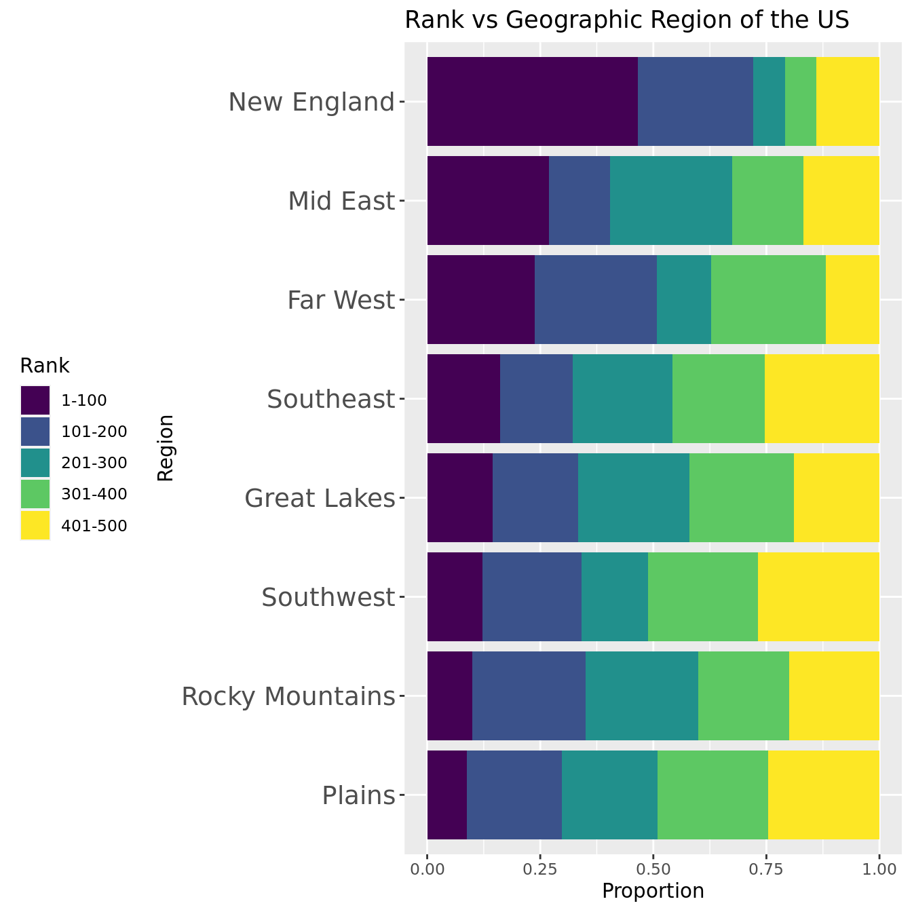

College Ranking Predictions
Report
Introduction
Research Background
Every year, millions of students apply to colleges across the United States, and many of them use college rankings lists from sources such as US News and World Report, Forbes.com, and Niche.com to to help them decide where to apply and where to go. In recent years, these lists have been heavily criticized for focusing on “exclusivity and resources, rather than accessibility and economic mobility” (1).The system can also be easily manipulated by a university if that university prioritize certain metrics to raise their rankings, as seen in Northeastern University meteoric rise from #163 to #49 on the US News and World Report list in only 17 years. The president of Northeastern University even explicitly stated that it was a top priority of the university to raise its ranking (2).
(1) https://thehill.com/changing-america/enrichment/education/3641004-the-scandal-facing-college-ranking-lists-explained/
(2) https://www.bostonmagazine.com/news/2014/08/26/how-northeastern-gamed-the-college-rankings/
These lists are important because students applying to college trust these rankings and weigh them into their college decisions. Due to the large impact that a college has on a student’s life, it is important to know where these rankings come from and what they actually measure. In this project, we will explore how influential different metrics are in determining a college’s ranking.
In general, we want to examine how different variables affect a school’s ranking on the Niche College Ranking List and determine which are most important to a high ranking. We plan to look at variables that are typically thought to influence school rank such as average SAT score and admission rate, but we also want to look at variables that aren’t typically thought of such as geographic region or endowment size.
For the sake of clarity, when we say a “low rank,” we are referring to schools with a lower numerical rank, such as #1 and #2. When we say a “high rank,” we a referring to schools with a high numerical rank, such as #499 and #500.
Research Question and Hypothesis
Question: Which characteristics of a university are most associated with rankings on the Niche College Ranking list? Of these characteristics, what is the relationship between high and low rank?
Hypothesis: We hypothesize that SAT/ACT scores, acceptance rate, and family income will have the strongest association with rank because since Niche’s audience is in large part students applying to college, we believe that they prioritize variables important in the college admissions process. Of these variables, we predict that SAT/ACT score will have strong negative relationship, acceptance rate will have a strong positive relationship, and family income will have a strong negative relationship with rank.
In our project, we will join two data sets: The Niche College Rankings list and the US Department of Education College Scorecard
Data
Data Set #1: Niche
The first data set comes from Niche’s “2023 Best Colleges in America” list
(https://www.niche.com/colleges/search/best-colleges/)
Niche aggregates data from a variety of sources, including the US Department of Education and reviews from students and alumni, to build their list of college rankings. The rankings list is updated monthly to reflect new data that Niche receives. However, Niche only receives data from the US Department of Education on an annual basis. The Niche data was scraped by Maia on October 17-19 2022.
There are 500 observations, representing the top 500 schools in the United States. Each observation has two variables:
collegeandrank.
Data Set #2: US Department of Education
The second data set comes from the US Department of Education’s College Scorecard, which is an exhaustive summary of characteristics and statistics for all colleges and universities in the United States.
(https://collegescorecard.ed.gov/data/)
The College Scorecard is updated by the Education Department as it collects new data. Data used in the scorecard comes comes from data reported by the institutions, data on federal financial aid, data from taxes, and data from other federal agencies.
There were 2,989 variables in the original data set, many of which we don’t need to answer our question, and since this data set was too large to load into RStudio, we used Excel to narrow this to 31 variables. We chose any variables that we thought would have an impact on college rank, and excluded redundant ones like specific breaksdowns of test scores. There are 6681 observations in the data set, representing all of the colleges and universities in the United States.
Data summary
Here is a summary of the variables we will be using in our analysis.
| Variable Name | Categorical (C) Quantitative (Q) |
Description |
|---|---|---|
| college | C | Institution name |
| rank | Q | Niche rank |
| REGION | C | US geographic region (New England, Mid East, Great Lakes, Plains, Southeast, Southwest, Rocky Mountains, Far West, Outlying Areas) |
| ACCREDAGENCY | C | Accreditor for Institution |
| CONTROL | C | Public, Private nonprofit, or Private for-profit |
| CCBASIC | C | Carnegie Classification (basic) |
| ADM_RATE | Q | Admission rate |
| UGDS | Q | Enrollment of undergraduate certificate/degree-seeking students |
| UGDS_WHITE | Q | Total share of enrollment of undergraduate degree-seeking students who are white |
| UGDS_BLACK | Q | Total share of enrollment of undergraduate degree-seeking students who are black |
| UGDS_HISP | Q | Total share of enrollment of undergraduate degree-seeking students who are Hispanic |
| UGDS_ASIAN | Q | Total share of enrollment of undergraduate degree-seeking students who are Asian |
| UGDS_AIAN | Q | Total share of enrollment of undergraduate degree-seeking students who are American Indian/Alaska Native |
| UGDS_NHPI | Q | Total share of enrollment of undergraduate degree-seeking students who are Native Hawaiian/Pacific Islander |
| UGDS_2MOR | Q | Total share of enrollment of undergraduate degree-seeking students who are two or more races |
| UGDS_NRA | Q | Total share of enrollment of undergraduate degree-seeking students who are non-resident aliens |
| UGDS_UNKN | Q | Total share of enrollment of undergraduate degree-seeking students whose race is unknown |
| NPT4_PUB | Q | Average net price for Title IV institutions (public institutions) |
| NPT4_PRIV | Q | Average net price for Title IV institutions (private for-profit and nonprofit institutions) |
| COSTT4_A | Q | Average cost of attendance (academic year institutions) |
| COSTT4_P | Q | Average cost of attendance (program-year institutions) |
| AVGFACSAL | Q | Average faculty salary |
| PCTPELL | Q | Percentage of undergraduates who receive a Pell Grant |
| C150_4 | Q | Completion rate for first-time, full-time students at four-year institutions (150% of expected time to completion) |
| AGE_ENTRY | Q | Average age of entry |
| FEMALE | Q | Share of female students |
| MARRIED | Q | Share of married students |
| FIRST_GEN | Q | Share of first-generation students |
| FAMINC | Q | Average family income |
| MD_FAMINC | Q | Median family income |
| ENDOWBEGIN | Q | Value of school’s endowment at the beginning of the fiscal year |
| SAT_AVG | Q | Average SAT equivalent score of students admitted |
| ACTCMMID | Q | Midpoint of the ACT cumulative score |
Methodology
Data Preparation
- To get the data, we scraped from Niche.com and downloaded data from the US Department of Education, and imported. The steps were done in an R script titled
niche-scrape.R
- Some of the college names were slightly different between datasets, so we had to individually change names in the Department of Education dataset to match those in the Niche one before joining the two. The Observations for
University of South Florida - Sarasota-Manatee(ranked 141) andUniversity of South Florida - St. Petersburg(ranked 181) have been dropped from thecollegesdata set due to their non-existence in theus_dep_of_eddata set. They were not present in the data set because these two universities were combined with the main University of South Florida campus. This is why thecollegesdata set only has 498 observations.
- We joined the US Department of Education dataset to the Niche dataset by the college names. The first 5 rows are displayed below.
| college | rank | UNITID | OPEID | OPEID6 | CITY | STABBR | ZIP | ACCREDAGENCY | LATITUDE | LONGITUDE | REGION | CCBASIC | CONTROL | ADM_RATE | SATVR25 | SATVR75 | SATMT25 | SATMT75 | SATWR25 | SATWR75 | SATVRMID | SATMTMID | SATWRMID | ACTCM25 | ACTCM75 | ACTEN25 | ACTEN75 | ACTMT25 | ACTMT75 | ACTWR25 | ACTWR75 | ACTCMMID | ACTENMID | ACTMTMID | ACTWRMID | SAT_AVG | UGDS | UG | UGDS_WHITE | UGDS_BLACK | UGDS_HISP | UGDS_ASIAN | UGDS_AIAN | UGDS_NHPI | UGDS_2MOR | UGDS_NRA | UGDS_UNKN | NPT4_PUB | NPT4_PRIV | COSTT4_A | COSTT4_P | AVGFACSAL | PCTPELL | C150_4 | AGE_ENTRY | FEMALE | MARRIED | FIRST_GEN | FAMINC | MD_FAMINC | MN_EARN_WNE_P10 | MD_EARN_WNE_P10 | ENDOWBEGIN |
|---|---|---|---|---|---|---|---|---|---|---|---|---|---|---|---|---|---|---|---|---|---|---|---|---|---|---|---|---|---|---|---|---|---|---|---|---|---|---|---|---|---|---|---|---|---|---|---|---|---|---|---|---|---|---|---|---|---|---|---|---|---|---|---|
| Massachusetts Institute of Technology | 1 | 166683 | 217800 | 2178 | Cambridge | MA | 02139-4307 | New England Commission on Higher Education | 42.35924 | -71.09323 | 1 | 15 | 2 | 0.0726 | 730 | 780 | 780 | 800 | 690 | 780 | 755 | 790 | 735 | 34 | 36 | 35 | 36 | 34 | 36 | 8 | 10 | 35 | 36 | 35 | 9 | 1550 | 4360 | NA | 0.2562 | 0.0670 | 0.1557 | 0.3236 | 0.0018 | 0.0007 | 0.0764 | 0.1028 | 0.0158 | NA | 16407 | 73160 | NA | 19640 | 0.1896 | 0.9558 | 19.34846 | 0.3718887 | NA | 0.2585139 | 86738.82 | 53870 | 153600 | 111222 | 17443750000 |
| Stanford University | 2 | 243744 | 130500 | 1305 | Stanford | CA | 94305 | Western Association of Schools and Colleges Senior Colleges and University Commission | 37.42943 | -122.16736 | 8 | 15 | 2 | 0.0519 | 700 | 770 | 720 | 800 | 690 | 780 | 735 | 760 | 735 | 31 | 35 | 33 | 36 | 30 | 35 | NA | NA | 33 | 35 | 33 | NA | 1491 | 6366 | NA | 0.2900 | 0.0743 | 0.1700 | 0.2480 | 0.0097 | 0.0035 | 0.0957 | 0.1067 | 0.0022 | NA | 12894 | 74570 | NA | 20971 | 0.1762 | 0.9523 | 19.70933 | 0.4940191 | NA | 0.3033854 | 80447.91 | 44842 | 141300 | 97798 | 27699834000 |
| Harvard University | 3 | 166027 | 215500 | 2155 | Cambridge | MA | 2138 | New England Commission on Higher Education | 42.37447 | -71.11831 | 1 | 15 | 2 | 0.0501 | 720 | 780 | 740 | 800 | 710 | 790 | 750 | 770 | 750 | 33 | 35 | 35 | 36 | 31 | 35 | 8 | 10 | 34 | 36 | 33 | 9 | 1520 | 6099 | NA | 0.3596 | 0.1058 | 0.1230 | 0.2066 | 0.0025 | 0.0016 | 0.0689 | 0.1123 | 0.0198 | NA | 13872 | 75914 | NA | 21143 | 0.1133 | 0.9763 | 22.46359 | 0.5015385 | 0.0635897 | 0.2570806 | 62458.19 | 33066 | 139100 | 84918 | 40929700000 |
| Yale University | 4 | 130794 | 142600 | 1426 | New Haven | CT | 6520 | New England Commission on Higher Education | 41.31116 | -72.92669 | 1 | 15 | 2 | 0.0653 | 720 | 780 | 740 | 800 | 710 | 790 | 750 | 770 | 750 | 33 | 35 | 34 | 36 | 31 | 35 | NA | NA | 34 | 35 | 33 | NA | 1520 | 4701 | NA | 0.3493 | 0.0910 | 0.1504 | 0.2389 | 0.0028 | 0.0011 | 0.0623 | 0.1004 | 0.0038 | NA | 15296 | 76645 | NA | 19490 | 0.1840 | 0.9639 | 19.53215 | 0.5006840 | NA | 0.2500000 | 80258.13 | 44004 | 124400 | 88655 | 30314816000 |
| Princeton University | 5 | 186131 | 262700 | 2627 | Princeton | NJ | 08544-0070 | Middle States Commission on Higher Education | 40.34873 | -74.65936 | 2 | 15 | 2 | 0.0563 | 710 | 770 | 740 | 800 | 710 | 790 | 740 | 770 | 750 | 32 | 35 | 34 | 36 | 31 | 35 | 8 | 10 | 34 | 35 | 33 | 9 | 1506 | 4688 | NA | 0.3631 | 0.0892 | 0.1064 | 0.2515 | 0.0019 | 0.0011 | 0.0591 | 0.1165 | 0.0113 | NA | 9836 | 74150 | NA | 20835 | 0.2136 | 0.9802 | 19.25682 | 0.5136437 | NA | 0.2773973 | 63667.64 | 37036 | 116300 | 95689 | 25623628250 |
- Then, we selected the variables that we thought could have an impact on college ranking as a starting point for our analysis. These are listed in our data summary.
- Some of the categorical variables in the US Department of Education dataset (
REGION,CONTROL, andCCBASIC) used numbers to represent the different levels, so we looked at the data dictionary and replaced each number with the words that it represents.
- All of the numerical variables are on different scales—for example, SAT scores can range from 400 to 1600, while admittance rate can only range from 0 to 1—and so we standardized them for easier analysis and comparison. We used the
scale()functions (found at https://www.statology.org/standardize-data-in-r/) to make the mean value of each numeric variable 0, and the standard deviation 1. The first 5 rows of our standardized dataset are printed below.
| college | rank | REGION | CONTROL | CCBASIC | ACCREDAGENCY | ADM_RATE | UGDS | UGDS_WHITE | UGDS_BLACK | UGDS_HISP | UGDS_ASIAN | UGDS_AIAN | UGDS_NHPI | UGDS_2MOR | UGDS_NRA | UGDS_UNKN | NPT4_PUB | NPT4_PRIV | COSTT4_A | COSTT4_P | AVGFACSAL | PCTPELL | C150_4 | AGE_ENTRY | FEMALE | MARRIED | FIRST_GEN | FAMINC | MD_FAMINC | ENDOWBEGIN | SAT_AVG | ACTCMMID |
|---|---|---|---|---|---|---|---|---|---|---|---|---|---|---|---|---|---|---|---|---|---|---|---|---|---|---|---|---|---|---|---|---|
| Massachusetts Institute of Technology | 1 | New England | Private, Non-profit | Doctoral Universities: Very High Research Activity | New England Commission on Higher Education | -2.248372 | -0.4488165 | -1.732837 | -0.1214557 | 0.2428424 | 3.090479 | -0.1022072 | -0.3336011 | 1.2864474 | 0.9088314 | -0.3792490 | NA | -1.440486 | 1.347387 | NA | 3.348112 | -0.6132292 | 1.664275 | -0.9403691 | -1.7820795 | NA | -0.0032383 | 0.2016238 | -0.3635658 | 4.823077 | 2.435243 | 2.157264 |
| Stanford University | 2 | Far West | Private, Non-profit | Doctoral Universities: Very High Research Activity | Western Association of Schools and Colleges Senior Colleges and University Commission | -2.335695 | -0.2691747 | -1.552828 | -0.0293488 | 0.3723680 | 2.137251 | 0.1234229 | 0.6073252 | 2.0710638 | 0.9834995 | -0.8292621 | NA | -1.900262 | 1.416553 | NA | 3.815132 | -0.7336406 | 1.639406 | -0.7893840 | -0.6603776 | NA | 0.4512025 | -0.0389967 | -0.7457627 | 7.852658 | 1.959465 | 1.625002 |
| Harvard University | 3 | New England | Private, Non-profit | Doctoral Universities: Very High Research Activity | New England Commission on Higher Education | -2.343288 | -0.2930851 | -1.182157 | 0.3680987 | -0.0533455 | 1.615244 | -0.0822146 | -0.0311605 | 0.9815446 | 1.0907153 | -0.2468922 | NA | -1.772263 | 1.482482 | NA | 3.875483 | -1.2988551 | 1.809938 | 0.3629841 | -0.5913166 | -0.1349421 | -0.0177544 | -0.7270840 | -1.2442952 | 11.760676 | 2.193322 | 1.891133 |
| Yale University | 4 | New England | Private, Non-profit | Doctoral Universities: Very High Research Activity | New England Commission on Higher Education | -2.279167 | -0.4182792 | -1.237012 | 0.1813614 | 0.1948364 | 2.022510 | -0.0736464 | -0.1991831 | 0.7132302 | 0.8628818 | -0.7763194 | NA | -1.585892 | 1.518341 | NA | 3.295480 | -0.6635504 | 1.721830 | -0.8635162 | -0.5991644 | NA | -0.0894640 | -0.0462554 | -0.7812391 | 8.625107 | 2.193322 | 1.891133 |
| Princeton University | 5 | Mid East | Private, Non-profit | Doctoral Universities: Very High Research Activity | Middle States Commission on Higher Education | -2.317134 | -0.4194434 | -1.163517 | 0.1586502 | -0.2037038 | 2.181382 | -0.0993511 | -0.1991831 | 0.5831383 | 1.1711271 | -0.5281504 | NA | -2.300489 | 1.395951 | NA | 3.767412 | -0.3975671 | 1.837650 | -0.9787111 | -0.4801369 | NA | 0.1880047 | -0.6808240 | -1.0762267 | 7.239361 | 2.080425 | 1.891133 |
Preliminary Exploration and Visualization
Means of Different Variables by Rank Group
| Interval | Mean Admission Rate | Mean SAT Average | Mean ACT Median | Mean % White Students | Mean % Asian Students | Mean Cost of Attendance |
|---|---|---|---|---|---|---|
| 1 to 100 | 0.2767340 | 1422.703 | 32.05495 | 0.4865770 | 0.1500930 | 60691.49 |
| 101 to 200 | 0.6181010 | 1266.932 | 27.45455 | 0.6271786 | 0.0698429 | 46371.74 |
| 201 to 300 | 0.6818970 | 1215.864 | 26.02469 | 0.6142470 | 0.0729400 | 43882.71 |
| 301 to 400 | 0.7157737 | 1160.091 | 24.14474 | 0.5629051 | 0.0548111 | 40799.30 |
| 401 to 500 | 0.7430135 | 1145.662 | 23.86076 | 0.6184102 | 0.0436867 | 36583.50 |
After grouping the schools into five groups of 100 by their rank, we see that different metrics vary considerably across the group. As the rank level gets higher, the mean admission rate increases, the mean SAT Average decreases, the mean ACT Median decreases, and the cost of attendance decreases. As far as demographic statistics, 1-100 ranked schools have considerably fewer White students and considerably more Asian students than schools ranked above 100.
Means of Rank by Categorical Variables
Below, we group the schools by the different categorical variables in our analysis and then take the mean rank for each of those groups.
| Control | Mean Rank |
|---|---|
| Private, Non-profit | 236.568 |
| Public | 269.670 |
| Private, For-profit | 360.750 |
We observe that private non-profit colleges have a higher mean rank than public colleges or private for-profit colleges.
| Region | Mean Rank |
|---|---|
| NA | 81.5000 |
| New England | 162.9070 |
| Far West | 222.6102 |
| Mid East | 229.7416 |
| Great Lakes | 260.5362 |
| Southeast | 273.7627 |
| Rocky Mountains | 273.8000 |
| Southwest | 285.5122 |
| Plains | 293.2632 |
As far as region, schools from New England have the highest mean rank, while schools from the Plains have the lowest mean rank.
| Carnegie Classification (Basic) | Mean Rank |
|---|---|
| Special Focus Four-Year: Business & Management Schools | 55.0000 |
| Doctoral Universities: Very High Research Activity | 123.8629 |
| Special Focus Four-Year: Engineering Schools | 148.5000 |
| Baccalaureate Colleges: Arts & Sciences Focus | 199.4045 |
| Special Focus Four-Year: Faith-Related Institutions | 213.0000 |
| Baccalaureate/Associate’s Colleges: Mixed Baccalaureate/Associate’s | 248.0000 |
| Special Focus Four-Year: Other Health Professions Schools | 268.0000 |
| Doctoral Universities: High Research Activity | 279.5663 |
| Master’s Colleges & Universities: Small Programs | 307.0000 |
| Baccalaureate Colleges: Diverse Fields | 313.3500 |
| Special Focus Four-Year: Arts, Music & Design Schools | 329.5000 |
| Doctoral/Professional Universities | 331.5962 |
| Special Focus Four-Year: Other Special Focus Institutions | 351.0000 |
| Master’s Colleges & Universities: Larger Programs | 363.2727 |
| Master’s Colleges & Universities: Medium Programs | 365.2069 |
| Special Focus Four-Year: Other Technology-Related Schools | 385.0000 |
| NA | 430.6667 |
| Tribal Colleges | 453.0000 |
Looking at the Carnegie Classification, Special Focus Four-Year: Business & Management Schools have the highest mean rank, followed by Doctoral Universities: Very High Research Activity. Tribal Colleges have the lowest mean rank.
| State | Mean Rank |
|---|---|
| ME | 107.0000 |
| MA | 123.5238 |
| DE | 143.0000 |
| CT | 166.4286 |
| VT | 167.5000 |
| CA | 172.3333 |
| DC | 174.2000 |
| GA | 191.6667 |
| OK | 196.0000 |
| WY | 200.0000 |
When looking at states, Maine has the highest mean rank, followed by Massachusetts.
Numerical Variables vs. Rank
| variable | r_squared |
|---|---|
| SAT_AVG | 0.6291468 |
| ACTCMMID | 0.6062324 |
| C150_4 | 0.5137627 |
| AVGFACSAL | 0.4692148 |
| ADM_RATE | 0.4048157 |
| PCTPELL | 0.2476545 |
| UGDS_NRA | 0.2040361 |
| FIRST_GEN | 0.1963961 |
| UGDS_ASIAN | 0.1946322 |
| COSTT4_A | 0.1577993 |
| FAMINC | 0.1525416 |
| AGE_ENTRY | 0.1462016 |
| MARRIED | 0.1072270 |
| FEMALE | 0.0752810 |
| MD_FAMINC | 0.0661957 |
| NPT4_PUB | 0.0568142 |
| UGDS | 0.0548673 |
| UGDS_2MOR | 0.0476589 |
| UGDS_BLACK | 0.0463458 |
| NPT4_PRIV | 0.0419051 |
| UGDS_WHITE | 0.0304200 |
| UGDS_NHPI | 0.0222752 |
| UGDS_UNKN | 0.0126394 |
| UGDS_AIAN | 0.0089268 |
| UGDS_HISP | 0.0040103 |
COSTT4_P (Average cost of attendance for program-year institutions) has been removed because there are only two observations.
ENDOWBEGIN (Endowment size) has been removed because the relationship is very skewed and not linear.
Based on the r-squared values of the remaining variables, we expect SAT_AVG (average SAT score), ACTCMMID (median ACT score), and C150_4 (rate of completion) to appear in the final model because they all have an R-squared value above 0.5, meaning that they explain more than 50% of the variation seen in rank.
We will look further at the relationship between these variables and rank by creating scatter plots and analyzing their respective slope. To simplify our analysis, we will only look at graphs with an r-squared greater than .1

parsnip model object
Call:
stats::lm(formula = rank ~ SAT_AVG, data = data)
Coefficients:
(Intercept) SAT_AVG
242.3 -115.0 parsnip model object
Call:
stats::lm(formula = rank ~ SAT_AVG, data = data)
Coefficients:
(Intercept) SAT_AVG
1400.1535 -0.9277 parsnip model object
Call:
stats::lm(formula = rank ~ ACTCMMID, data = data)
Coefficients:
(Intercept) ACTCMMID
241.6 -112.9 parsnip model object
Call:
stats::lm(formula = rank ~ ACTCMMID, data = data)
Coefficients:
(Intercept) ACTCMMID
1049.58 -30.04 parsnip model object
Call:
stats::lm(formula = rank ~ C150_4, data = data)
Coefficients:
(Intercept) C150_4
249.8 -103.5 parsnip model object
Call:
stats::lm(formula = rank ~ C150_4, data = data)
Coefficients:
(Intercept) C150_4
780.3 -735.2 parsnip model object
Call:
stats::lm(formula = rank ~ AVGFACSAL, data = data)
Coefficients:
(Intercept) AVGFACSAL
249.77 -98.89 parsnip model object
Call:
stats::lm(formula = rank ~ AVGFACSAL, data = data)
Coefficients:
(Intercept) AVGFACSAL
600.1381 -0.0347 parsnip model object
Call:
stats::lm(formula = rank ~ ADM_RATE, data = data)
Coefficients:
(Intercept) ADM_RATE
248.86 91.74 parsnip model object
Call:
stats::lm(formula = rank ~ ADM_RATE, data = data)
Coefficients:
(Intercept) ADM_RATE
14.48 387.02 parsnip model object
Call:
stats::lm(formula = rank ~ PCTPELL, data = data)
Coefficients:
(Intercept) PCTPELL
250.20 71.75 parsnip model object
Call:
stats::lm(formula = rank ~ PCTPELL, data = data)
Coefficients:
(Intercept) PCTPELL
83.96 644.76 parsnip model object
Call:
stats::lm(formula = rank ~ UGDS_NRA, data = data)
Coefficients:
(Intercept) UGDS_NRA
249.77 -65.21 parsnip model object
Call:
stats::lm(formula = rank ~ UGDS_NRA, data = data)
Coefficients:
(Intercept) UGDS_NRA
318.8 -1248.5 parsnip model object
Call:
stats::lm(formula = rank ~ FIRST_GEN, data = data)
Coefficients:
(Intercept) FIRST_GEN
252.89 63.57 parsnip model object
Call:
stats::lm(formula = rank ~ FIRST_GEN, data = data)
Coefficients:
(Intercept) FIRST_GEN
86.24 643.83 parsnip model object
Call:
stats::lm(formula = rank ~ UGDS_ASIAN, data = data)
Coefficients:
(Intercept) UGDS_ASIAN
249.77 -63.69 parsnip model object
Call:
stats::lm(formula = rank ~ UGDS_ASIAN, data = data)
Coefficients:
(Intercept) UGDS_ASIAN
312.8 -803.0 parsnip model object
Call:
stats::lm(formula = rank ~ COSTT4_A, data = data)
Coefficients:
(Intercept) COSTT4_A
250.09 -57.38 parsnip model object
Call:
stats::lm(formula = rank ~ COSTT4_A, data = data)
Coefficients:
(Intercept) COSTT4_A
378.705858 -0.002815 parsnip model object
Call:
stats::lm(formula = rank ~ FAMINC, data = data)
Coefficients:
(Intercept) FAMINC
250.58 -56.27 parsnip model object
Call:
stats::lm(formula = rank ~ FAMINC, data = data)
Coefficients:
(Intercept) FAMINC
425.935302 -0.002152 parsnip model object
Call:
stats::lm(formula = rank ~ AGE_ENTRY, data = data)
Coefficients:
(Intercept) AGE_ENTRY
250.58 55.09 parsnip model object
Call:
stats::lm(formula = rank ~ AGE_ENTRY, data = data)
Coefficients:
(Intercept) AGE_ENTRY
-247.21 23.05 parsnip model object
Call:
stats::lm(formula = rank ~ MARRIED, data = data)
Coefficients:
(Intercept) MARRIED
272.62 45.71 parsnip model object
Call:
stats::lm(formula = rank ~ MARRIED, data = data)
Coefficients:
(Intercept) MARRIED
227.3 615.2 | variable | r_squared | scaled_slope | slope |
|---|---|---|---|
| SAT_AVG | 0.6291468 | -115.00 | -9.2770e-01 |
| ACTCMMID | 0.6062324 | -112.90 | -3.0040e+01 |
| C150_4 | 0.5137627 | -103.50 | -7.3520e+02 |
| AVGFACSAL | 0.4692148 | -98.89 | -3.4700e-02 |
| ADM_RATE | 0.4048157 | 91.74 | 3.8702e+02 |
| PCTPELL | 0.2476545 | 71.75 | 6.4476e+02 |
| UGDS_NRA | 0.2040361 | -65.21 | -1.2485e+03 |
| FIRST_GEN | 0.1963961 | 63.57 | 6.4383e+02 |
| UGDS_ASIAN | 0.1946322 | -63.69 | -8.0300e+02 |
| COSTT4_A | 0.1577993 | -57.38 | -2.8150e-03 |
| FAMINC | 0.1525416 | -56.27 | -2.1520e-03 |
| AGE_ENTRY | 0.1462016 | 55.09 | 2.3050e+01 |
| MARRIED | 0.1072270 | 45.71 | 6.1520e+02 |

From these graphs, there appears to be a very strong positive association between admission rate/ % of undergrads on Pell grants and college rank. There appears to be somewhat of a positive association between % of undergrads who are white/% of first generation students and college ranks. This means that as these metrics decrease, the rank of a school is expected to decrease
There appears to be a strong negative association between % of undergrads who are Asian/% of undergrads who are non-resident aliens/average faculty salary/graduation rate and college rank. There appears to be somewhat of a negative relationship between average net price for private universities/cost of attendance/average family income/median family income and college rank. This means that as these metrics increase, the rank of a school is expected to increase.
For all type of standardized test scores, there appear to be a strong negative relationship between score and rank, indicating that as the test scores increases, the rank of a school is expected to to increase.
Check Correlation Coefficients
We checked the correlation coefficients between the variables so we don’t use variables that are too similar in our model. For the ones that have a absolute value of r greater than 0.8, we picked only one to put in the model. We removed the columns that has more than 100 NA and used the rest for calculating correlations.

According to the correlation matrix, we need to remove variable pairs that have a high correlation (the absolute value > 0.8). In order to do so, we filter the following correlation table to only display entries with value greater or equal to 0.8.
| rank | ADM_RATE | UGDS | UGDS_WHITE | UGDS_BLACK | UGDS_HISP | UGDS_ASIAN | UGDS_AIAN | UGDS_NHPI | UGDS_2MOR | UGDS_NRA | UGDS_UNKN | COSTT4_A | AVGFACSAL | PCTPELL | C150_4 | AGE_ENTRY | FEMALE | MARRIED | FIRST_GEN | FAMINC | MD_FAMINC | ENDOWBEGIN | SAT_AVG | ACTCMMID | |
|---|---|---|---|---|---|---|---|---|---|---|---|---|---|---|---|---|---|---|---|---|---|---|---|---|---|
| rank | |||||||||||||||||||||||||
| ADM_RATE | |||||||||||||||||||||||||
| UGDS | |||||||||||||||||||||||||
| UGDS_WHITE | |||||||||||||||||||||||||
| UGDS_BLACK | |||||||||||||||||||||||||
| UGDS_HISP | |||||||||||||||||||||||||
| UGDS_ASIAN | |||||||||||||||||||||||||
| UGDS_AIAN | |||||||||||||||||||||||||
| UGDS_NHPI | |||||||||||||||||||||||||
| UGDS_2MOR | |||||||||||||||||||||||||
| UGDS_NRA | |||||||||||||||||||||||||
| UGDS_UNKN | |||||||||||||||||||||||||
| COSTT4_A | |||||||||||||||||||||||||
| AVGFACSAL | |||||||||||||||||||||||||
| PCTPELL | |||||||||||||||||||||||||
| C150_4 | 0.83893042183357 | 0.849384841586927 | |||||||||||||||||||||||
| AGE_ENTRY | 0.905880209781912 | ||||||||||||||||||||||||
| FEMALE | |||||||||||||||||||||||||
| MARRIED | 0.905880209781912 | ||||||||||||||||||||||||
| FIRST_GEN | |||||||||||||||||||||||||
| FAMINC | 0.953776864530003 | ||||||||||||||||||||||||
| MD_FAMINC | 0.953776864530003 | ||||||||||||||||||||||||
| ENDOWBEGIN | |||||||||||||||||||||||||
| SAT_AVG | 0.83893042183357 | 0.975600694502382 | |||||||||||||||||||||||
| ACTCMMID | 0.849384841586927 | 0.975600694502382 |
| Variable Pairs with r > 0.8 | Correlation Coefficients |
|---|---|
| C150_4, SAT_AVG | 0.8389 |
| C150_4, ACTCMMID | 0.8494 |
| AGE_ENTRY, MARRIED | 0.9059 |
| FAMINC, MD_FAMINC | 0.9538 |
| SAT_AVG, ACTCMMID | 0.9756 |
According to the filtered table, these variable pairs are (MD_FAMINC, FAMINC), (C150_4, SAT_AVG), (C150_4, ACTCMMID) and (ACTCMMID, SAT_AVG). Therefore, we will drop the variables C150_4, MD_FAMINC, ACTCMMID and preserve SAT_AVG and FAMINC to represent all other variables.
Build model
Because we want to predict college rank, a number from various variables, we decided that a linear regression model would be the best statistical method to answer our question. We began our modeling by removing the variables with a correlation coefficient above 0.8.
| Selected Variables |
|---|
| college |
| rank |
| REGION |
| CONTROL |
| CCBASIC |
| ACCREDAGENCY |
| ADM_RATE |
| UGDS |
| UGDS_WHITE |
| UGDS_BLACK |
| UGDS_HISP |
| UGDS_ASIAN |
| UGDS_AIAN |
| UGDS_NHPI |
| UGDS_2MOR |
| UGDS_NRA |
| UGDS_UNKN |
| COSTT4_A |
| AVGFACSAL |
| PCTPELL |
| AGE_ENTRY |
| FAMINC |
| ENDOWBEGIN |
| SAT_AVG |
| FEMALE |
| MARRIED |
| FIRST_GEN |
Then we need to split dataset into two parts: a training and a test set. We will use 80% of the college data for training our model and the other 20% for testing our model.
Results
Categorical Variable Analysis



There appear to be the greatest differences between bars of proportions of rank groups in the Carnegie Classification group, suggesting that this has the strongest association with rank.
Discussion
References
Learned how to do for loops from TA Eli Gnesin